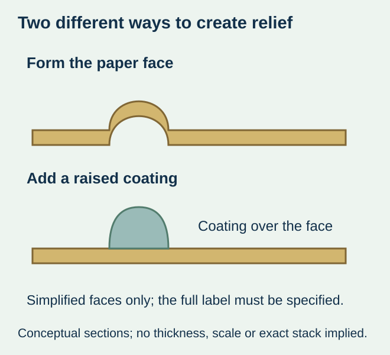
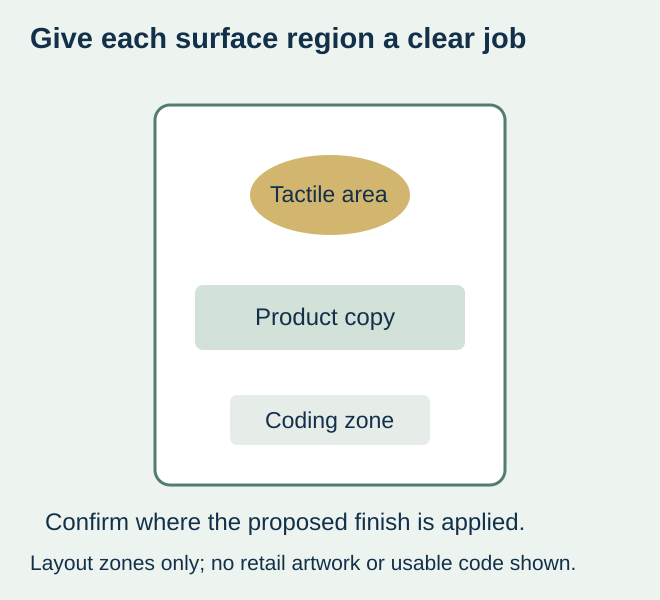

A winery asks for a three-dimensional crest on its label. One sample has a formed paper relief; another has a raised clear surface over the print. Both are described as premium and tactile, but they do not define the same construction or necessarily reproduce the same reference.
Specify what must be felt, where it belongs and which physical construction the proposal uses. Embossed paper and a raised coating are different routes to discuss with the converter. If the required effect is a particular formed-paper relief, do not silently replace it with a coating. If the objective is simply a supported raised feature, compare actual samples instead of choosing from the word “3D.”


Separate formed material from an added surface
Mohawk’s embossing guidance describes paper being formed by an embossing die to make a raised image, or a recessed image for debossing. Its paper and tooling advice has its own scope. It does not establish a depth, minimum detail or supported label construction for this project.
For an added-surface example, A B Graphic International’s DigiJet description identifies spot varnishing and tactile effects in a digital embellishment route. Other proposed coating routes need their own identification and review. This external equipment description does not confirm that ZFU owns that module, offers a particular coating or can reproduce every demonstrated feature.
Use the desired effect to frame the choice
| Buyer’s actual requirement | Useful route to request | Condition before acceptance |
|---|---|---|
| Formed-paper relief or a specified blind-paper effect | A supported embossing proposal on the intended stock | A physical sample representing that paper, feature and construction |
| Raised surface over selected printed detail | An identified raised-coating proposal | Actual coating/print/stock combination and relevant appearance/touch evidence |
| Tactile emphasis without a fixed process | Disclosed alternatives for the same feature | Compare real samples and the complete commercial scope |
| Metallic shine as well as touch | Separate metallic and tactile requirements | Identify how each is produced rather than infer relief from foil |
| Only a printed shadow effect is needed | An agreed flat graphic treatment | Do not describe flat artwork as a physical tactile feature |


Mark one feature at actual label size
Show the crest, lettering or other selected region separately from the printed artwork and physical cut. Keep the intended shape, edges and relationship to surrounding copy visible. A screen zoom cannot communicate touch, and a tiny physical feature may not reproduce the impression of a large reference.
Ask the converter to identify relevant detail and placement limits for its offered stock and route. Do not copy a dimension, tool depth or coating height from an unrelated brochure. For an illustrative reserve-wine label, a raised crest may be the focal point while the product identity remains flat and readable. That is a design brief, not a demonstrated production capability.
Keep later code or marking areas explicit. A decorative treatment in those regions must be reviewed with the actual later process instead of assuming that a raised or glossy surface accepts the same output as an untreated area. The finished-surface guide helps identify that interface.
Compare the complete construction under the intended handling
A sample should identify the face material, print, tactile process and any other finish. If the two routes use different base stocks, record that difference; the observed preference is for the complete proposals, not an isolated proof that one process is better.
For wet service or repeated handling, ask what the offered complete sample represents. A tactile crest looking clean when dry establishes neither ice-bucket suitability nor resistance to rubbing. Have the responsible parties agree relevant observations and acceptance conditions. No universal height, abrasion limit, water-resistance result or food-contact approval is implied by the process name.
Where the issue is a displaced feature, identify the layer relationship using the decoration-registration guide. Where it is simply whether the surface feels as intended, keep that tactile comparison separate. A registration correction does not turn a raised coating into formed paper.
Make price and repeat-order scope answerable
Request the actual offered preparation, tooling where applicable, finishing operations and sample scope for the design and quantity. A tool-free digital example does not create a standing free-setup offer. An existing embossing tool does not establish compatibility with another stock or revised feature.
If the stock, crest or route changes later, ask which sample and preparation still represent the proposed order. Keep the accepted tactile reference with the construction and artwork revision. The useful result is a named physical effect and supported proposal, with appearance and handling evidence clear enough to inform the purchase; it is not an unsupported claim that every “3D” label has the same feel or value.
Discuss the unresolved label requirement
Send the actual wine-label design, marked tactile feature, preferred stock, bottle, appearance/touch reference and quantities. Identify wet handling or later coding, and ask which finishing construction and physical sample can be offered. Review the wine-label product scope and prepare a label specification inquiry. The contact page opens an email draft and lists email or WhatsApp for attachments. Supply, proof options, testing, pricing and timing require project confirmation.